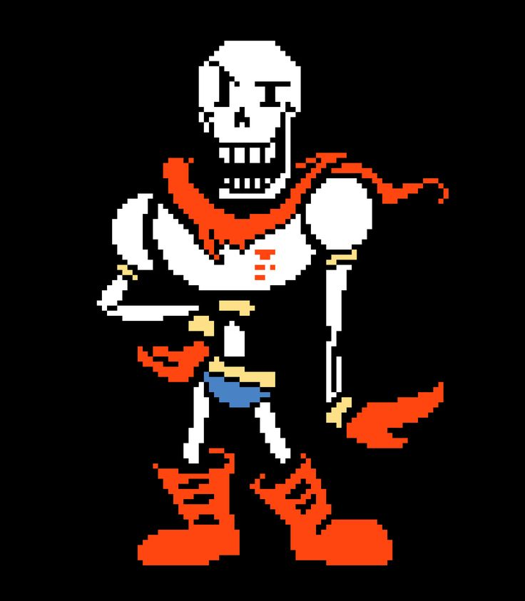

Papyrus é um personagem introduzido no ano de 2015 video game Subconto.
Ele é a esqueleto com um grande ego que aspira entrar para a Guarda Real,
e também o irmão de Sans e amigo de Undyne.O. Ele é eternamente otimista,
e apesar de querer capturar o humano para provar a si mesmo, encontra-se
fazendo amizade com o humano em vez disso. Ele não aparece em Deltarune,
mas foi aludido. Ele foi criado por Toby Fox com apoio do Temmie Chang.
Ele foi originalmente concebido como uma pessoa assustadora que usa um
fedora e não tem qualidades redentoras, embora Fox não tenha gostado dessa
ideia, então ele a descartou. Seu caráter comunica-se com o Tipo de papiro,
que teve que ser alterado para uma "roteiro vertical falso desenhado à mão"
quando traduzido para o japonês.